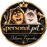

Pp

Personal
PetBanho e Tosa
Groomer Juliana Fagundes. Cada raça, cada pelagem, um cuidado só dele.

Cruz Alta/RS · 13 anos com cãesSeu pet merece esse cuidado.Personal Pet · Groomer Juliana Fagundes
Groomer Juliana Fagundes. Cada raça, cada pelagem, um cuidado só dele.

Cruz Alta/RS · 13 anos com cãesSeu pet merece esse cuidado.Personal Pet · Groomer Juliana Fagundes